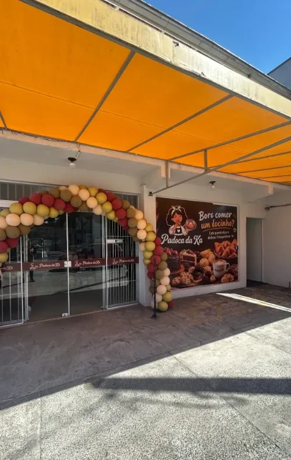

R. São Firmino, 555 · Vila Nova
Visite a gente
Todos os dias, das 7h às 19h30
Endereço
R. São Firmino, 555 — Vila NovaJoinville — SC, 89237-355
Horários
- Todos os dias7h às 19h30
Fale com a gente
Avaliar no Google

R. São Firmino, 555 · Vila Nova
Todos os dias, das 7h às 19h30
